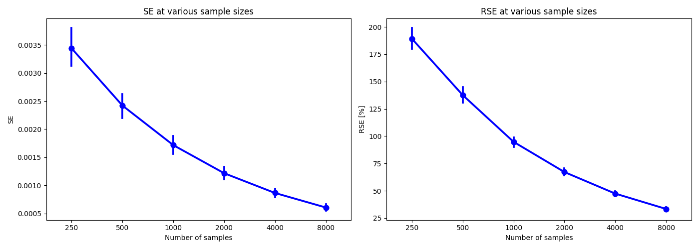
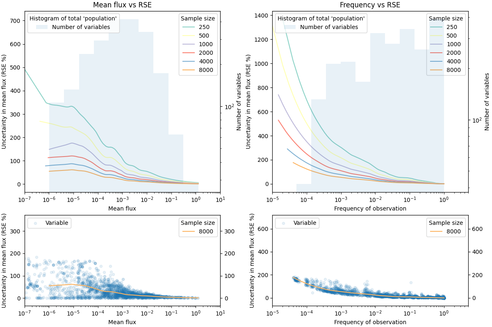

As a basis for this analysis we calculate some general properties of our data. We have 20001 samples and 2464 metabolite-member interactions (variables), which is assumed to be a larger number than what in most cases will be necessary to perform. This therefore serves as an approximate to the 'population'. SteadierCom takes a number of samples, a batch, and gives the user the mean value of each variable from this batch. Based on the sample mean of the 'population' dataset described above, the following results show the max, median and mean flux of the variables:
| value | |
|---|---|
| metric | |
| Mean of 'population' means | 0.015476 |
| Max of 'population' means | 1.260731 |
| Median of 'population' means | 0.000611 |
In order to evaluate the effect of increasing sample size we have created S batches of N samples. We assess the similarity between these batches by computing the standard error (SE) of the batch means for each variable. Since the mean of each variable is quite different we also look at the realtive SE (RSE), which expresses the variability of the mean of each variable relative to their mean.
The S=200 batches were created using bootstrapping with replacement at various N values.
This figure shows the change in standard error of the mean (SE) and relative standard error (RSE) when batch size increases (has more samples). A low SE means that the results from simulations with a similar number of samples are quite similar.

As described previously, the metabolite-member interactions (variables) will have different mean values. It is also expected that some samples will give a non-zero value of a metabolite-member interactions, while others will not. From this we can both calculate the mean of the variable in the batch and also the frequency that the interaction was observed. In this part of the report, study RSE as a function of the mean flux across all batches (mean of means, left plot) and as a function of frequency across all batches (mean of frequencies, right plot).
As described previously, the metabolite-member interactions (variables) will have different mean values. It is also expected that some samples will give a non-zero value of a metabolite-member interactions, while others will not. From this we can both calculate the mean of the variable in the batch and also the frequency that the interaction was observed. In this part of the report, study RSE as a function of the mean flux across all batches (mean of means, left plot) and as a function of frequency across all batches (mean of frequencies, right plot).

From the previous plot we see that how the frequency of an observed interaction (variable) and its mean value affect the RSE value. The results show that there is more relative uncertainity in the interactions that rarely occur or occur with a low mean rate. Moreover, frequency and mean are related, since lower frequency of an interaction also drives down its mean value.
To account for this in determining sample size, we will filter values based on ~population median and frequency. Interactions (variables) that occur with <1% of samples (<0.01 frequency) in the population are unlikely to be of importance. The same is true for interactions that occur at a very low mean rate for example <1% of the mean of the population means of all variables.
| Change in RSE [%] | Current RSE [%] | ||
|---|---|---|---|
| previoius sample size | current sample size | ||
| 500 | 1000 | -13.078362 | 31.705296 |
| 1000 | 1500 | -5.932738 | 25.772558 |
| 1500 | 2000 | -3.281135 | 22.491423 |
| 2000 | 2500 | -2.397655 | 20.093768 |
| 2500 | 3000 | -1.799393 | 18.294376 |
| 3000 | 3500 | -1.399797 | 16.894579 |
| 3500 | 4000 | -1.046232 | 15.848347 |
| 4000 | 4500 | -0.936061 | 14.912287 |
| 4500 | 5000 | -0.737046 | 14.175240 |